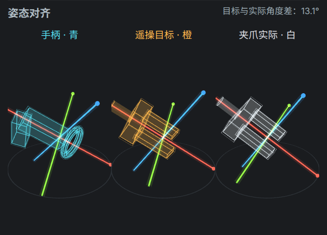
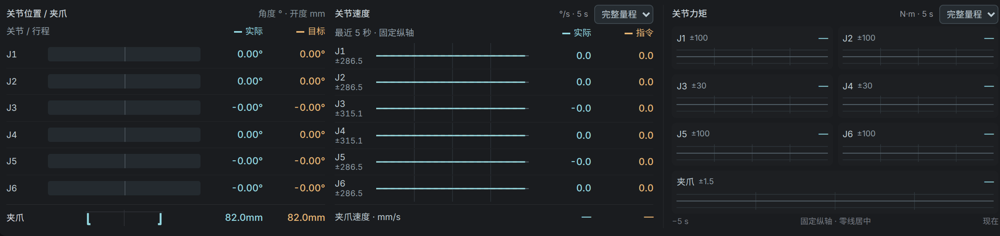

统一控制内核
arx-televr 的 250 Hz worker、IK 与 MuJoCo / 真机后端。控制权以租约、epoch 和 TTL 管理；手机、动作、标定和策略都经同一个 gateway 进入。
ARX X5-2025 · Quest Pro · iPhone · RealSense
遥操采集、数据导出、H800 训练、机械臂执行，都在一个仓库里。MuJoCo 仿真与真机共用 arx-televr 控制内核：在仿真里练过的，就是真机上运行的。

arx-televr 的 250 Hz worker、IK 与 MuJoCo / 真机后端。控制权以租约、epoch 和 TTL 管理；手机、动作、标定和策略都经同一个 gateway 进入。
Quest 右手柄沿用上游语义：A 切换模式、A+B 回 Home、Grip 跟随、Trigger 夹爪；左手柄负责采集。iPhone ARKit 经 UDP 接入同一内核。
MCAP 原始记录与双相机视频，导出 LeRobot v2.1 与 GR00T 数据集。每条数据记录控制栈、相机集合与时间缺口，原始数据从不改写。
π0.5 零样本与微调模型（PyTorch / JAX）、GR00T 推理。模型代码在各自环境运行，机械臂侧不加载 GPU 框架。
腕部 D435i 与 D455 / D405 双相机手眼标定、夹爪零点与负载辨识，采样计划可在仿真中预演。
tmux 总控一键管理内核、遥操、网页与相机；18081 页面显示 3D 场景、相机、手柄姿态与关节遥测；端口集中登记，冲突一目了然。
./run.sh sim startQuest 或 iPhone，仿真与真机同一套按键左手 X 录制 / 保存反馈、命令与相机帧独立计时./run.sh data exportLeRobot v2.1 + 原始样本 + 元数据integrations/openpiH800 上训练 π0.5./run.sh policy pi05-sft检查相机集合，动作经内核下发

./run.sh · tmux 工作台 · 18081 监看 · 浏览器控制台 · iOS App
inputs · phone · operations · motion · sensors · data · policy · calibration · monitor · console
control/ · arx-televr · worker 250 Hz · gateway · MuJoCo / ARX SDK
embodied.contracts · 注册表 · RPC · 内核客户端 · 设备锁 · 机器人配置
下层不导入上层；只有内核打开机械臂 SDK，只有相机服务打开相机。依赖方向由测试自动检查。
$ ./run.sh 具身智能平台：./run.sh <功能> <命令> [参数] sim MuJoCo 仿真工作台（Quest 遥操 + arx 内核 + 采集 + 网页） kernel arx-televr 控制内核（control/，唯一 SDK 所有者） phone iPhone 遥操 data 数据查看、回放与导出 policy 策略推理 calib 标定 …共 16 组 $ ./run.sh check ports monitor tcp 18081 本项目 18081 监看页与 MuJoCo 工作台 xr_service tcp 63901 本项目 XRoboToolkit PC Service
$ ./run.sh setup deps $ uv sync --locked $ ./run.sh kernel setup $ ./run.sh check all $ ./run.sh sim start